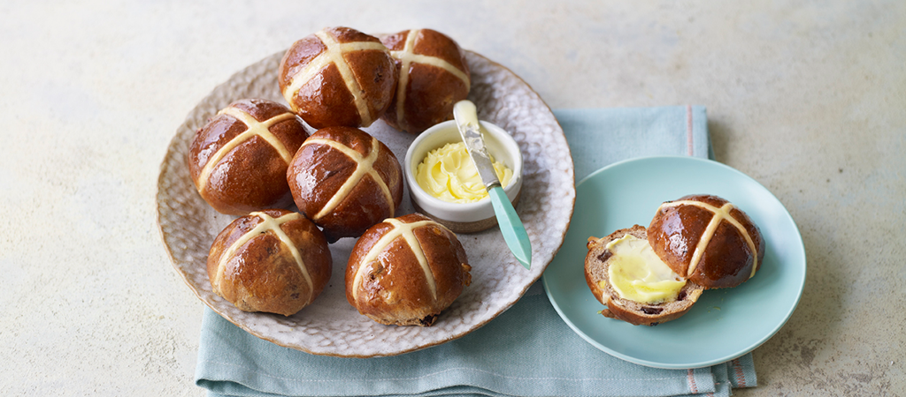

The Great British Bake Off
Home
Contestants
Recipes
Recipes
Welcome to the Season 10 Best Recipes page
Here you can see some of the bakers' recipes and try them out yourself at home!
David's Cinnamon Swirls
Alice's Orange and Cardamom Ice Cream Buns
Steph's Hot Cross Buns
